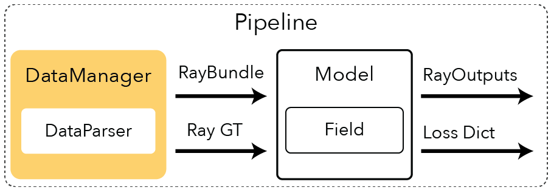
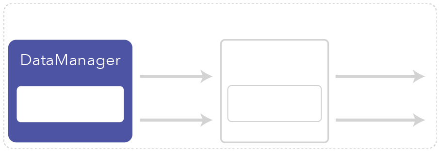
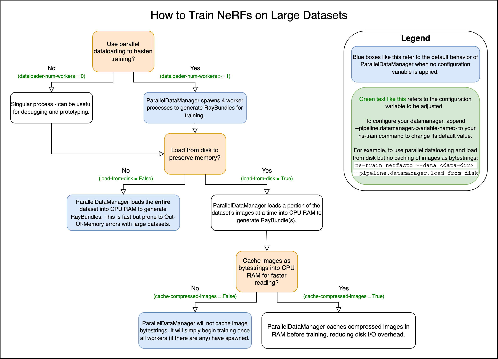
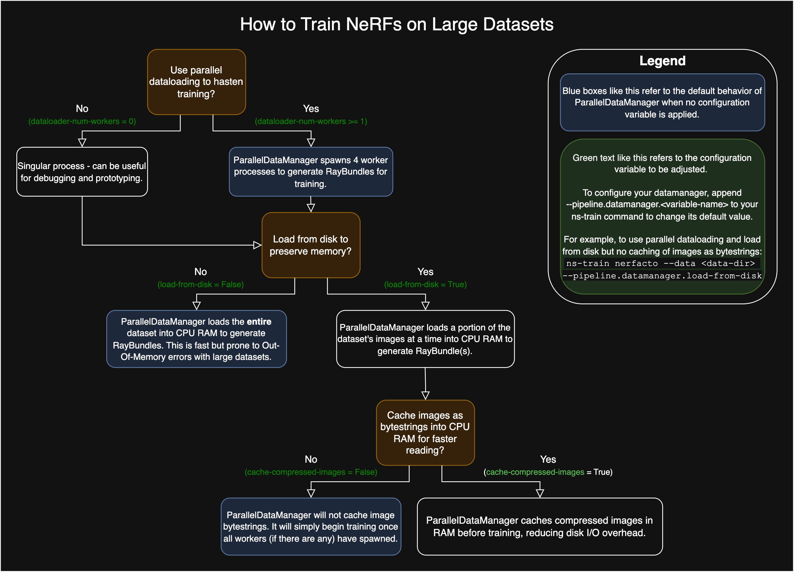
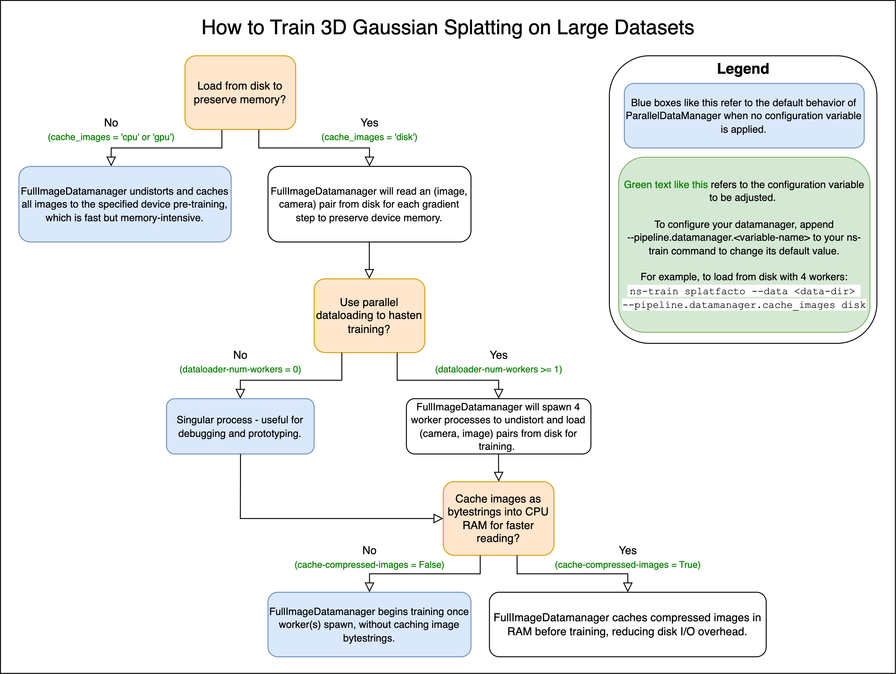
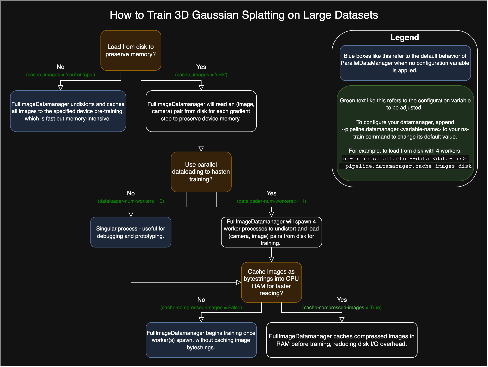

DataManagers#
 {kind=link}
{kind=link}
What is a DataManager?#
The DataManager batches and returns two components from an input dataset:
A representation of viewpoint (either cameras or rays).
For splatting methods (
FullImageDataManager): aCamerasobject.For ray sampling methods (
VanillaDataManager): aRayBundleobject.
A dictionary of ground truth data.
For splatting methods (
FullImageDataManager): dictionary contains complete images.For ray sampling methods (
VanillaDataManager): dictionary contains per-ray information.
Behaviors are defined by implementing the abstract methods required by the DataManager:
class DataManager(nn.Module):
"""Generic data manager's abstract class
"""
@abstractmethod
def next_train(self, step: int) -> Tuple[Union[RayBundle, Cameras], Dict]:
"""Returns the next batch of data for train."""
@abstractmethod
def next_eval(self, step: int) -> Tuple[Union[RayBundle, Cameras], Dict]:
"""Returns the next batch of data for eval."""
@abstractmethod
def next_eval_image(self, step: int) -> Tuple[int, RayBundle, Dict]:
"""Returns the next eval image.
Returns:
The image index from the eval dataset, the CameraRayBundle, and the RayGT dictionary.
"""
Example#
We’ve implemented a VanillaDataManager that implements the standard logic of most NeRF papers. It will randomly sample training rays with corresponding ground truth information, in RayBundle and RayGT objects respectively. The config for the VanillaDataManager is the following.
@dataclass
class VanillaDataManagerConfig(InstantiateConfig):
"""Configuration for data manager instantiation; DataManager is in charge of keeping the train/eval dataparsers;
After instantiation, data manager holds both train/eval datasets and is in charge of returning unpacked
train/eval data at each iteration
"""
_target: Type = field(default_factory=lambda: VanillaDataManager)
"""target class to instantiate"""
dataparser: AnnotatedDataParserUnion = BlenderDataParserConfig()
"""specifies the dataparser used to unpack the data"""
train_num_rays_per_batch: int = 1024
"""number of rays per batch to use per training iteration"""
train_num_images_to_sample_from: int = -1
"""number of images to sample during training iteration"""
eval_num_rays_per_batch: int = 1024
"""number of rays per batch to use per eval iteration"""
eval_num_images_to_sample_from: int = -1
"""number of images to sample during eval iteration"""
camera_optimizer: CameraOptimizerConfig = CameraOptimizerConfig()
"""specifies the camera pose optimizer used during training"""
Let’s take a quick look at how the next_train method is implemented. Here we sample images, then pixels, and then return the RayBundle and RayGT information.
def next_train(self, step: int) -> Tuple[RayBundle, Dict]:
"""Returns the next batch of data from the train dataloader."""
self.train_count += 1
# sample a batch of images
image_batch = next(self.iter_train_image_dataloader)
# sample pixels from this batch of images
batch = self.train_pixel_sampler.sample(image_batch)
ray_indices = batch["indices"]
# generate rays from this image and pixel indices
ray_bundle = self.train_ray_generator(ray_indices)
# return RayBundle and RayGT information
return ray_bundle, batch
You can see our code for more details.
Creating Your Own#
We currently don’t have other implementations because most papers follow the VanillaDataManager implementation. However, it should be straightforward to add a VanillaDataManager with logic that progressively adds cameras, for instance, by relying on the step and modifying RayBundle and RayGT generation logic.
Disk Caching for Large Datasets#
As of January 2025, the FullImageDatamanager and ParallelImageDatamanager implementations now support parallelized dataloading and dataloading from disk to avoid Out-Of-Memory errors and support very large datasets. To train a NeRF-based method with a large dataset that’s unable to fit in memory, please add the load_from_disk flag to your ns-train command. For example with nerfacto:
ns-train nerfacto --data {PROCESSED_DATA_DIR} --pipeline.datamanager.load-from-disk
To train splatfacto with a large dataset that’s unable to fit in memory, please set the device of cache_images to "disk". For example with splatfacto:
ns-train splatfacto --data {PROCESSED_DATA_DIR} --pipeline.datamanager.cache-images disk
Checkout these flowcharts for more customization on large datasets!
   {kind=link}
{kind=link}
{kind=link}
{kind=link}
Migrating Your DataManager to the new DataManager#
Many methods subclass a DataManager and add extra data to it. If you would like your custom datamanager to also support new parallel features, you can migrate any custom dataloading logic to the new custom_ray_processor() API. This function takes in a full training batch (either image or ray bundle) and allows the user to modify or add to it. Let’s take a look at an example for the LERF method, which was built on Nerfstudio’s VanillaDataManager. This API provides an interface to attach new information to the RayBundle (for ray based methods), Cameras object (for splatting based methods), or ground truth dictionary. It runs in a background process if disk caching is enabled, otherwise it runs in the main process.
Naively transfering code to custom_ray_processor may still OOM on very large datasets if initialization code requires computing something over the whole dataset. To fully take advantage of parallelization make sure your subclassed datamanager computes new information inside the custom_ray_processor, or caches a subset of the whole dataset. This can also still be slow if pre-computation requires GPU-heavy steps on the same GPU used for training.
Note: Because the parallel DataManager uses background processes, any member of the DataManager needs to be picklable to be used inside custom_ray_processor.
class LERFDataManager(VanillaDataManager):
"""Subclass VanillaDataManager to add extra data processing
Args:
config: the DataManagerConfig used to instantiate class
"""
config: LERFDataManagerConfig
def __init__(
self,
config: LERFDataManagerConfig,
device: Union[torch.device, str] = "cpu",
test_mode: Literal["test", "val", "inference"] = "val",
world_size: int = 1,
local_rank: int = 0,
**kwargs,
):
super().__init__(
config=config, device=device, test_mode=test_mode, world_size=world_size, local_rank=local_rank, **kwargs
)
# Some code to initialize all the CLIP and DINO feature encoders.
self.image_encoder: BaseImageEncoder = kwargs["image_encoder"]
self.dino_dataloader = ...
self.clip_interpolator = ...
def next_train(self, step: int) -> Tuple[RayBundle, Dict]:
"""Returns the next batch of data from the train dataloader.
In this custom DataManager we need to add on the data that LERF needs, namely CLIP and DINO features.
"""
self.train_count += 1
image_batch = next(self.iter_train_image_dataloader)
assert self.train_pixel_sampler is not None
batch = self.train_pixel_sampler.sample(image_batch)
ray_indices = batch["indices"]
ray_bundle = self.train_ray_generator(ray_indices)
batch["clip"], clip_scale = self.clip_interpolator(ray_indices)
batch["dino"] = self.dino_dataloader(ray_indices)
ray_bundle.metadata["clip_scales"] = clip_scale
# assume all cameras have the same focal length and image width
ray_bundle.metadata["fx"] = self.train_dataset.cameras[0].fx.item()
ray_bundle.metadata["width"] = self.train_dataset.cameras[0].width.item()
ray_bundle.metadata["fy"] = self.train_dataset.cameras[0].fy.item()
ray_bundle.metadata["height"] = self.train_dataset.cameras[0].height.item()
return ray_bundle, batch
To migrate this custom datamanager to the new datamanager, we’ll subclass the new ParallelDataManager and shift the data customization process from next_train() to custom_ray_processor().
The function custom_ray_processor() is called with a fully populated ray bundle and ground truth batch, just like the subclassed next_train in the above code. This code, however, is run in a background process.
class LERFDataManager(ParallelDataManager, Generic[TDataset]):
"""
__init__ stays the same
"""
...
def custom_ray_processor(
self, ray_bundle: RayBundle, batch: Dict
) -> Tuple[RayBundle, Dict]:
"""An API to add latents, metadata, or other further customization to the RayBundle dataloading process that is parallelized."""
ray_indices = batch["indices"]
batch["clip"], clip_scale = self.clip_interpolator(ray_indices)
batch["dino"] = self.dino_dataloader(ray_indices)
ray_bundle.metadata["clip_scales"] = clip_scale
# Assume all cameras have the same focal length and image dimensions.
ray_bundle.metadata["fx"] = self.train_dataset.cameras[0].fx.item()
ray_bundle.metadata["width"] = self.train_dataset.cameras[0].width.item()
ray_bundle.metadata["fy"] = self.train_dataset.cameras[0].fy.item()
ray_bundle.metadata["height"] = self.train_dataset.cameras[0].height.item()
return ray_bundle, batch